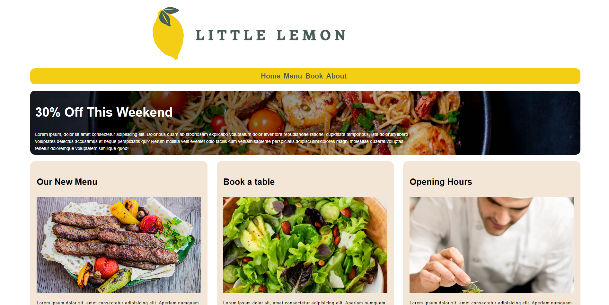

As an ambitious and passionate individual, I am thrilled to introduce myself as Mac Arthur Yap Jr. I am a devoted husband and father residing in Los Angeles, California, and currently pursuing a degree in computer science at Western Governors University.
I am a diligent seeker of knowledge, consistently striving to enhance my problem-solving skills and broaden my knowledge base. With a positive outlook and dedication to teamwork, I am motivated to excel in any given task and eager to collaborate with others towards a common goal.
With prior completion of an IT course in course careers, I am excited to further hone and expand my technical competencies in the field. My ultimate career goal is to pursue a path in cybersecurity, where I can make a meaningful impact in the industry and utilize my skills to their fullest potential.
Thank you for taking the time to read my introduction. I am eager to connect with you further to discuss how my passion, drive, and dedication can contribute to the success of your team.
Software Development Projects
-
Run Buddy

-
Black Jack
-
Basketball Score Counter
-
Quote Generator
-
Little Lemon
 -
Horiseon

-
My Portfolio